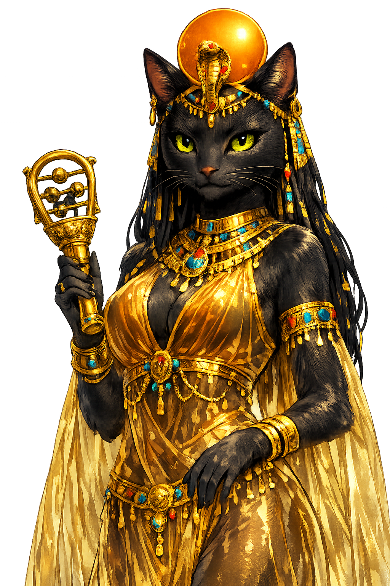

The Authentic Orthography
Home, Fertility, Cats · She of the ointment jar (Egyptian bꜣstt)

Unicode restoration and ASCII comparison
𓎯𓏏𓏏𓁐
The name in its original Egyptian form. Bꜣstt (𓎯𓏏𓏏𓁐) is attested in the source tradition — “She of the ointment jar (Egyptian bꜣstt)”. Its Egyptological ain and alef letters carry the full phonetic and orthographic weight of the source tradition.
bastet
Reduced to plain bastet, the name loses everything that made it specific: Egyptological ain and alef letters. What remains is an ASCII string that machines can parse but that no longer speaks with its original voice.
Bꜣstt
The Unicode restoration recovers what ASCII flattened. Bꜣstt restores Egyptological ain and alef letters, returning the name to its original written dignity. The domain encodes to Punycode, but the browser displays the truth.
Bꜣstt.com → xn--bstt-ge8o.com
The non-ASCII characters in Bꜣstt are encoded while the ASCII remains visible. To the DNS, it is Punycode. To humanity, it is Bꜣstt.
How Bꜣstt travels from ancient script to the modern URL
Egyptian bꜣstt; the original vocalisation is unknown. The name is connected with the ointment jar (bꜣs) and the cat-goddess of Bubastis.
Home, Fertility, Cats
The Unicode restoration Bꜣstt uses Egyptological characters registrable in .com; hieroglyphs are outside the .com IDN table.
How Bꜣstt was spoken
Cats, Childbirth, and Domestic Sanctity
Bꜣstt begins as a lioness and ends as a cat. In the Old Kingdom she is a fierce daughter of Re, one of the raging eyes of the sun; by the Late Period she has become the benevolent lady of the home, her round face and upright ears copied by millions of household cats. The transformation is not a decline but an expansion: she learns to keep watch at the cradle as well as at the battlefield.
Her name may mean 'she of the ointment jar' (bꜣstt), linking her to perfumes, cosmetics, and the guarded substances of the bedroom. At her cult center, Per-Bastet — Greek Boubastis — pilgrims gathered for one of Egypt's most exuberant festivals: music, dance, wine, and the sacred procession of the goddess's barge.
Bastet's later animal form; the cat protects the home from vermin and evil, and embodies solar warmth.
Her older, fiercer aspect as a daughter of Re who fights the chaos serpent Apep.
Her festivals featured sistrums, drums, and dancing; she is a goddess of controlled revelry.
Amulets of Bastet protected women in childbirth and children against malign forces.
Stories of Bꜣstt
Bastet's myths are fewer than those of Isis or Horus, but her role in the solar cycle is vivid: she is the gentle dawn that follows the lioness's night.
In the mythology of the Distant Goddess, the solar eye — often in leonine form — leaves Egypt for Nubia in anger. Re sends Thoth or Shu to coax her back. When she returns, she is pacified as Bastet, the cat, and the festival of her homecoming is celebrated at Bubastis. The myth explains both the dangerous heat of the absent sun and the safety of its domesticated return.
As a daughter of Re, Bastet takes part in the nightly battle against Apep, the serpent of chaos. In her lioness form she rips at the enemy; in her cat form she watches the prow of the sun barque, guarding Re with sharp eyes.
Herodotus (Histories 2.60) describes the festival at Boubastis: boats of pilgrims, men and women together, sang, clapped, and exposed themselves in ribald jest as they traveled upriver. At the temple, great sacrifices of wine and animals were offered, and revelers honored the goddess with music and dance.
Late Period and Greco-Roman amulets invoke Bastet against illness and the evil eye. Small bronze cats were deposited by the thousand in her temple precinct, votive bodies for a goddess who watched over the body's margins: birth, sleep, sexuality, and death.
Bastet is the goddess of thresholds. She lives where the wild presses against the wall of the house: the cat who sleeps on the bed but still dreams of the hunt. Her mythology is the domestication of solar power — not its weakening, but its decision to protect something small.
Enter Extended Lore